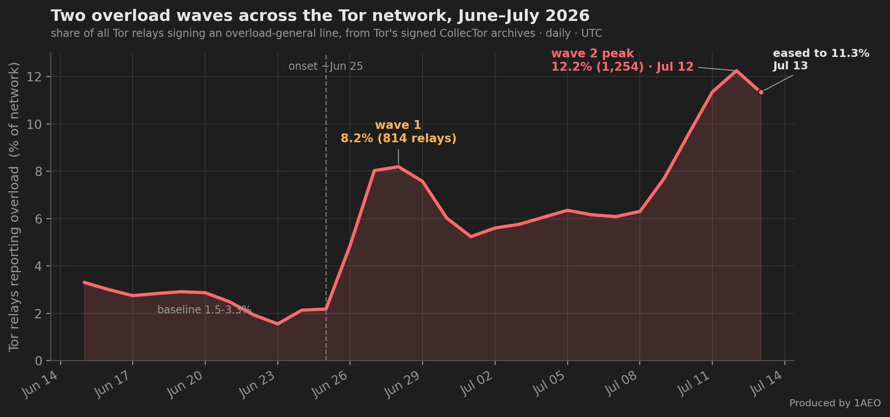
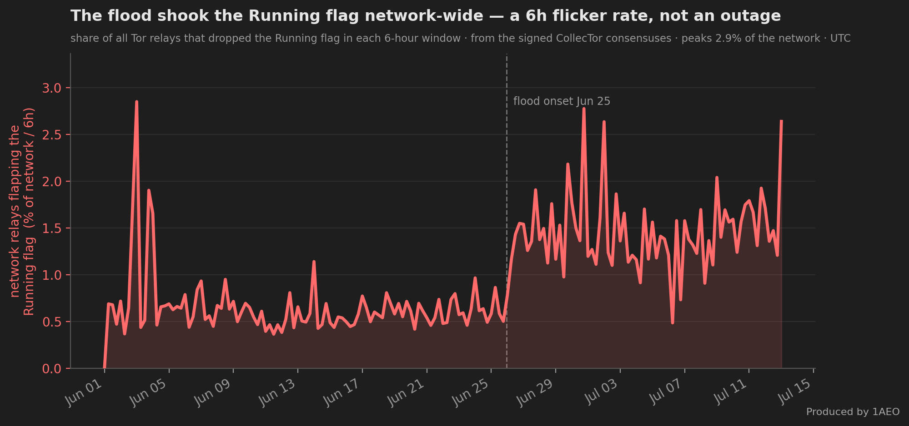

The Tor Network Is Under a Circuit-Building DoS Wave — Seen Through Its Own Public Data
Since late June 2026 the Tor network has been under a circuit-building denial-of-service wave. This post reconstructs it from Tor's own signed archives — the CollecTor archive of relay descriptors and consensuses, and the Onionoo API. Every number below is reproducible; the commands are at the end.
Part 1 of a five-part series on the June–July 2026 circuit-building DoS. 1. The Tor Network Is Under a Circuit-Building DoS Wave (you are here) — the network-wide view from Tor's public data. 2. Anatomy of the Attack — the three waves and how each one works. 3. What It Actually Costs — the CPU and memory bill, and how 1AEO ranked. 4. The Flood Below Tor — the connection flood Tor's own counters cannot see. 5. Defending Against Circuit-Building DoS — better metrics and the protocol fixes we're asking for.
What a Circuit-Building DoS Looks Like #
Every Tor circuit begins with a CPU-costly cryptographic handshake (an "onionskin"), and every open circuit holds memory on the relay. Built at scale and left idle, circuits load a relay's CPU and RAM while moving almost no traffic. When relays cross an internal overload threshold, current Tor versions publish an overload-general line in the descriptor they sign and upload — and those descriptors are archived, publicly, forever. So "how much of the network is overloaded, day by day" is a question the public record can answer directly.
Two Overload Waves Across the Network #
Parsing the overload-general line out of every relay's signed server-descriptor, for every day in June–July 2026, gives the fraction of the network reporting overload over time:

- Baseline (Jun 15–25): a steady 1.5–3.3% of relays overloaded — ordinary background, dipping to 1.55% on Jun 23.
- Wave 1 (circuit flood): Jun 26 jumps to 4.9%, Jun 27 to 8.0%, peaking Jun 28 at 8.2% (814 relays). It never fully clears — a 5–6% floor holds through Jul 8.
- Second hump (same campaign): Jul 9 at 7.7%, Jul 10 at 9.5%, Jul 11 at 11.4%, and Jul 12 at 12.2% (1,254 relays) — the second hump's high, roughly 4x the pre-flood baseline; it eased to ~11.3% on Jul 13 rather than climbing further — part of the same campaign, not a separate new attack.
The overloaded relays are spread across roughly 290 distinct networks (autonomous systems) — OVH, Hetzner, netcup, IONOS, DigitalOcean, Oracle and many more. This is a broad, network-wide flood, not something aimed at any single operator, and it has the same shape as the 2022–2023 network DDoS the Tor Project documented.
The Flood Lands on the Guard Position #
A circuit-creation flood hits the guard position — the first hop of a circuit, where CREATE cells arrive and Tor's per-source circuit-rate defense (DoSCircuitCreation) fires. This shows cleanly if you track overload by role, over time: for each day, join every relay's consensus flags (its role) with the overload-general line it signed (its overload state), both from CollecTor, and take the share of each role that was overloaded:
![Line chart, May 31 to Jul 12 2026, share of relays overloaded by consensus role. Before the Jun 25 flood onset every role sits at a low single-digit baseline, with a brief guard bump in mid-June. From onset, the guard-only line (red) erupts to about 13 percent by Jun 28 and climbs to about 18 percent by Jul 12. The guard-plus-exit line (amber) climbs steadily to about 15 percent by Jul 12, nearly matching guard-only, because those relays also sit in the guard position. The exit-only line (green) stays under 1 percent for the first two weeks, then climbs sharply in the second week to about 6 percent as the flood begins reaching exits too. Middle relays sit lower, around 8 percent. A dashed cyan line for relays holding HSDir but not Guard stays in the middle band throughout, around 7 percent, far below the guard lines.](images/circuit-building-dos-wave-june-2026-chart-guards-vs-exits.png)
The split is clear. Through early June the baseline was low — around 1% for most roles, with guards a few points higher and a brief bump in mid-June that subsided. Then, from the Jun 25 onset, the guard-only overload rate climbs sharply — to ~13% within three days, ~17.9% by Jul 12, while exit-only relays stayed near their baseline, under 1% for the first two weeks. Relays that are both guard and guard+exit relays climb almost as steeply as guard-only — to ~14.9% by Jul 12 — because they, too, sit in the guard position; middle relays stay lower. The flood lands on the first hop, as the mechanism predicts — and it is the guard position, not any directory role: at the Jul 12 peak, relays holding HSDir but not Guard overloaded at just ~7% — down in the middle-relay band, far below the guard rate (the dashed line above), with no HSDir effect beyond the Guard overlap. The one recent shift: in the second week the pure-exit rate began climbing too — from under 1% to ~6% by Jul 12 — so the flood is starting to reach the exit position as well, though guards are still hit several times harder.
This also matters when comparing operators: an exit-heavy operator can show a low overall overload rate simply because much of its fleet sits in a position the flood doesn't target. To compare fairly, you have to compare guards to guards — which is exactly what we do in the companion cost post.
The campaign's onion-service component selects its targets by a different rule again. A relay carries INTRODUCE2 traffic only while it is serving as an onion service's introduction point, and Tor's source picks intro points by uptime — the Stable flag — not the Guard or HSDir flag, rotating through them continuously. So that load spreads across a broad, shifting set of relays instead of concentrating on the guard position, and it isn't gated on the directory flags either: only about three-quarters of our own relays carry V2Dir, yet the introduction role rotates across essentially the whole Stable pool. "Who gets hit" depends on which load you mean — the companion anatomy post traces the introduction flood in detail.
Did It Knock Relays Offline? #
Counting relays that carry the Running flag in each signed consensus (again, straight from CollecTor) shows the network's online count over the event. The flood did cost the network some relays, but less than a casual read of "% running" suggests:
- At the trough (around Jun 30) the network was down roughly 3–4% of its relays versus the pre-flood level, then recovered.
- That is on top of the ~9% of known relays that sit "not running" at any given time for ordinary, unrelated reasons (churn, maintenance, retired relays still in the directory). The flood-attributable dip is the ~3–4%, not the standing 9%.
In other words: the network got stressed and shed a few percent of relays briefly, but it did not fall over. The dominant, measurable cost is overload (relays pushed past their limits while still running), not mass outage.
We can watch that flicker directly in the same signed consensuses — the share of all Tor relays that dropped the Running flag in each 6-hour window:

The Flood Made the Running Flag Flap — Network-Wide #
That dip is only half the story. Beneath a nearly-flat online count, the flood made a large share of the network churn its Running flag — relays dropping out of the consensus and reappearing an hour or two later, over and over. Diffing the whole network's Running set between consecutive hourly consensuses (each one signed and archived on CollecTor) gives the network-wide flag-flux over time:
![Two stacked panels, June 15 to July 12 2026, hourly, whole Tor network. Top: the number of relays holding the Running flag — steady around a 9,802 baseline, sliding after the June 26 onset to an hourly low of 9,333 on June 30 (minus 4.8 percent), then recovering above baseline as about 400 brand-new relays join in early July. Bottom: relays entering or leaving the Running set per hour — around 46 per hour before the flood, then jumping to an average of 3.2 times baseline in wave one and 2.8 times in wave two, with a dotted line marking 3 times baseline; a box notes about 5,925 relays flapped Running at least twice during the flood, 2.9 times the roughly 2,036 in an equal pre-flood window.](images/circuit-building-dos-wave-june-2026-chart-network-flap.png)
- Flag-flux roughly tripled. Before the flood, about 46 relays changed
Runningstate per hour across the whole Tor network. From the Jun 25–26 onset it ran at an average of ×3.2 baseline through wave one (peaking at a daily-median ~172/hr on Jun 29, 3.9×) and ×2.8 through wave two, with only a brief single-day dip (~1.6× on Jul 6) in between. - Yet the network barely shrank. The total online count dipped only ~3.5% (daily median; the single worst hour touched 9,333, −4.8%) to its Jun 30 trough, then recovered — even running a couple of percent above its pre-flood level on Jul 6, helped along by an unrelated batch of several hundred brand-new relays (one operator alone added ~400) joining the network in early July — before settling back near baseline. High flux with a nearly-flat total is the fingerprint of flapping: relays losing and regaining reachability under load, not relays leaving for good. (The flapping evidence itself is immune to those new arrivals: a relay's first appearance is never counted as a flap, so the ~5,900 repeat-flappers are relays that genuinely dropped out and came back.)
- It touched a broad set of relays. Comparing two equal 16-day windows, the number of distinct relays that flapped
Runningat least twice rose from about 2,000 before the flood to about 5,900 during it (2.9×); roughly 1,300 flapped eight or more times. This is a broad, network-wide effect across thousands of distinct relays, not a handful.
Why does a loaded relay lose its flag without going offline? Because Running is a reachability vote. Tor's directory authorities — seven to nine of them voting in any given hour across this period — each independently test every relay per the directory spec: a relay counts as Running for an authority only if that authority managed to connect to it within the last 45 minutes, and the hourly consensus grants the flag only when a majority of the authorities voting that hour agree; a relay without it is dropped from the consensus entirely. (The count drifts as the authorities themselves go up and down — nine in mid-June, eight on Jun 24, seven now — and the majority is always taken over whoever actually voted that hour, whatever their number.) A relay saturated by the flood keeps serving the circuits it already carries, but can be too far behind to answer fresh probe connections — so it flickers out of the consensus for an hour or two at a time and then returns. A measurement failure with real consequences, not an outage. (Our own fleet's share of this flapping was roughly proportional to our ~10% share of the network — the flood flapped everyone, us no worse than the rest.)
The same public archive that answers "how many relays were overloaded" also answers "how steady is the flag they publish" — and through this flood, reachability itself became visibly noisier across the network, even as the total stayed up.
How to Reproduce This Yourself #
Everything above comes from two public endpoints. No relay access, no private data.
Network overload over time — from the signed server-descriptor archives:
# Monthly archive of every signed server descriptor:
https://collector.torproject.org/archive/relay-descriptors/server-descriptors/
# Each descriptor that was overloaded contains a line:
# overload-general 1 <timestamp>
# Tally, per published-day, the fraction of relays carrying that line.Overload by role, over time — join the two CollecTor archives, per day:
# role: from each day's consensus, read every relay's flags (the "s" line):
https://collector.torproject.org/archive/relay-descriptors/consensuses/
# Guard-only / Exit-only / both / neither
# overload: from the server descriptors, which relays signed overload-general that day.
# Then, per day and per role, take the overloaded share.
# For a quick CURRENT snapshot instead, Onionoo gives both fields in one call:
curl "https://onionoo.torproject.org/details?fields=fingerprint,overload_general_timestamp,flags"
# overloaded now = overload_general_timestamp within the last 72h; role from "flags".Online / Running counts over time — from the signed consensus archives:
https://collector.torproject.org/archive/relay-descriptors/consensuses/
# Count relays whose entry carries the "Running" flag, per hourly consensus.Same Symptom Class as 2022–2023 #
Circuit-creation floods overloading relays' onionskin processing — concentrated on guards — are the same class of event the Tor Project documented during the last big wave:
- tor-relays: DoS attacks — status update (Oct 2022)
- Tor blog: "Tor is slow right now. Here is what is happening."
- Tor blog: "Introducing Proof-of-Work Defense for Onion Services" (2023)
- Tor relay overload guide — how to read the overload signals
If you run relays and want to compare notes, or you're a researcher who wants the parsed data, get in touch — we're happy to share.
The scripts that rebuild every chart in this post straight from Tor's public archives are published at github.com/1aeo/1aeo-blog-charts — each is self-contained and fetches only from CollecTor and Onionoo.